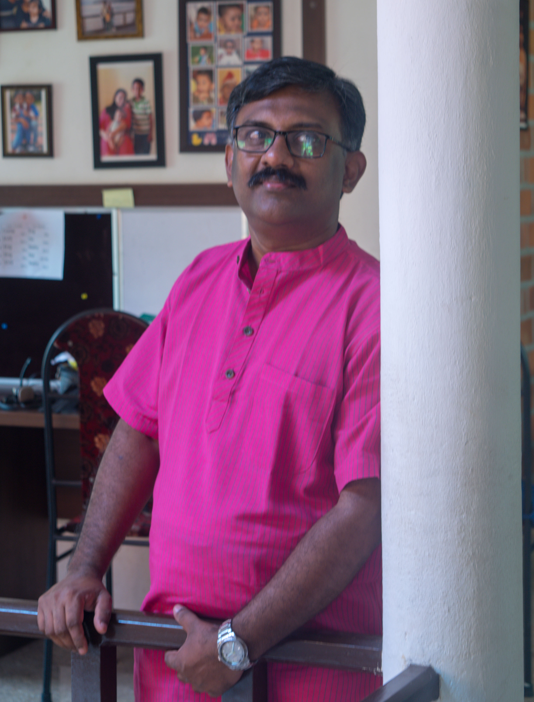
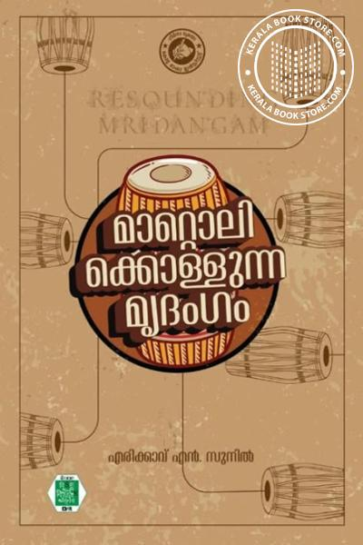

Explore the diverse facets of Erickavu N Sunil's journey through this curated collection of moments from performances, academic engagements, publications, and cultural events.
Stage Performance
Live Mridangam performance showcasing traditional Carnatic music
Concert Performance
Accompanying eminent musicians in classical music concerts

Mridangam Solo
Demonstrating advanced Mridangam techniques
With TV Sankaranarayanan
Accompanying the legendary vocalist in concert
Kerala Kalamandalam
Teaching and mentoring students at the prestigious institution
Workshop Session
Conducting educational workshops and masterclasses
Academic Presentation
Presenting research and scholarly work
Academic Portrait
Professional headshot for academic engagements
Resounding Mridangam
Internationally acclaimed English publication (2021)

Mattolikkollunna Mridangam
Malayalam publication by Kerala Bhasha Institute (2025)
Book Presentation
Presenting his literary work to the audience
Book Launch Event
Celebrating the release of his publications
Cultural Event
Participating in cultural and musical events
Collaboration
Working with fellow musicians and artists
Group Celebration
Celebrating achievements with colleagues and well-wishers
Performance Moment
Capturing the essence of live performance
Stage Presence
Commanding presence on the classical music stage
Mridangam Mastery
Demonstrating technical excellence and artistry
Concert Performance
Engaging with audiences through music
Gallery Information
This gallery showcases the multifaceted career of Erickavu N Sunil, from his performances as an A-Grade Mridangam artist to his academic contributions at Kerala Kalamandalam, his published works, and his role in organizing cultural events. Each image represents a milestone in his journey of preserving and promoting Indian classical music.